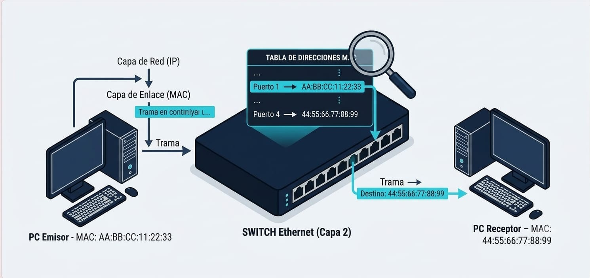

Cómo los dispositivos dentro de una misma red se identifican y se comunican usando direcciones MAC, tramas y switches.
¿Qué es la Capa 2: Enlace de Datos?
La Capa de Enlace de Datos es la segunda capa del modelo OSI. Se encarga de facilitar la transferencia de datos de forma confiable a través de un medio físico dentro de una misma red local (LAN). Toma los paquetes provenientes de la Capa de Red y los transforma en tramas (frames) para ser enviados directamente entre dispositivos conectados físicamente.
Características Principales
Direccionamiento Físico (Dirección MAC): Utiliza identificadores únicos grabados en las tarjetas de red de cada dispositivo para saber exactamente a quién enviar la información.
Detección y Control de Errores: Incluye mecanismos (como el CRC o Comprobación de Redundancia Cíclica) para detectar si los datos sufrieron daños al viajar por el cable o la señal Wi-Fi.
Control de Flujo: Asegura que un dispositivo muy rápido no sobresature de datos a uno más lento.
Subcapas LLC y MAC: Se divide en dos subcapas: LLC (Logical Link Control) que interactúa con la capa superior, y MAC (Media Access Control) que gestiona el acceso al medio físico.
💡 ¿Sabías que...? Las direcciones MAC se graban permanentemente en el chip de la tarjeta de red desde su fabricación en la fábrica, por lo que también se les conoce como "direcciones de quemado" (Burned-In Address / BIA).
Ejemplos y Tecnologías
Switch Ethernet: Dispositivo principal de Capa 2 que reenvía datos utilizando las direcciones MAC destino.
Estándar Ethernet (IEEE 802.3): La tecnología de red de cable más común utilizada en las redes locales del campus.
Wi-Fi (IEEE 802.11): Encargada del manejo del enlace de datos a nivel inalámbrico.
Dirección MAC: Ejemplo: 1A-2B-3C-4D-5E-6F.
ARP (Address Resolution Protocol)
¿Qué es?
Protocolo que relaciona una dirección IP lógica con una dirección MAC física, permitiendo que los dispositivos se encuentren dentro de la misma red local.
Características
Envía una solicitud en broadcast preguntando "¿quién tiene esta IP?"
El dispositivo dueño de esa IP responde con su dirección MAC
El resultado se guarda temporalmente en la tabla ARP
Ejemplos
Antes de que PC0 pueda enviar un ping a PC1, primero usa ARP para conocer la dirección MAC de PC1.
Broadcast
¿Qué es?
Un tipo de comunicación donde un dispositivo envía información a todos los demás dispositivos de la red local al mismo tiempo.
Características
Usa la dirección MAC especial FF:FF:FF:FF:FF:FF
Todos los dispositivos de la red reciben el mensaje
Ejemplos
Las solicitudes ARP se envían como broadcast, ya que el dispositivo no sabe todavía a quién pertenece la IP que busca.
Unicast
¿Qué es?
Un tipo de comunicación donde un dispositivo envía información directamente a un único destinatario específico.
Características
Usa la dirección MAC específica del destinatario
Es más eficiente que broadcast porque no satura la red
Ejemplos
Una vez que PC0 conoce la MAC de PC1 (gracias a ARP), el ping se envía como unicast, directo a PC1.
Cómo viajan los datos entre dispositivos
El siguiente diagrama ilustra cómo la Capa 2 empaqueta los datos en tramas agregando direcciones MAC de origen y destino para enviarlos directamente de un dispositivo a otro mediante un switch.

Flujo de datos en la red local (Capa 2) desde la computadora emisor hacia la receptora a través del Switch.
Ethernet
¿Qué es?
Ethernet es el estándar de tecnología más utilizado para redes de área local (LAN). Define cómo se transmiten las tramas a través de cables como el UTP, incluyendo el formato de las tramas y las reglas para acceder al medio de transmisión.
Características
Es el estándar más común en redes cableadas actuales
Define el formato de la trama Ethernet (con direcciones MAC de origen y destino)
Opera en la Capa 1 (Física) y Capa 2 (Enlace de Datos) del modelo OSI
Ejemplos
Cuando conectamos una PC a un switch mediante un cable de red, esa comunicación se realiza siguiendo el estándar Ethernet.
Funcionamiento de la LAN
En una red LAN como la que construimos en el Laboratorio 2, cuatro computadoras se conectan a un mismo switch dentro de la red 192.168.10.0/24. Cuando una PC quiere comunicarse con otra, primero usa ARP para descubrir la dirección MAC del destino, luego arma una trama Ethernet con esa MAC, y el switch se encarga de reenviarla únicamente al puerto correcto, basándose en su tabla de direcciones MAC aprendidas dinámicamente.
Evidencias de la práctica
A continuación se muestra la topología construida en Cisco Packet Tracer para el Laboratorio 2, junto con los resultados de las pruebas de conectividad realizadas.